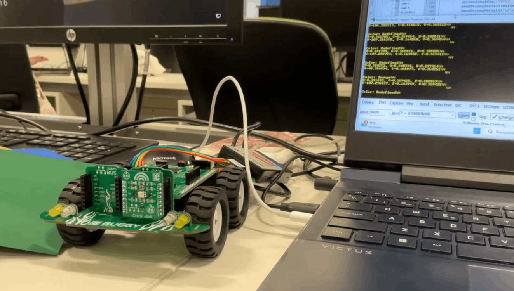

← Projects · $_ Code sheet · Embedded C for Microcontrollers, Imperial, Mar 2025
Maze-solving
buggy
A PIC18 buggy that reads colour-coded cards to find its way through a maze, then retraces its route back to the start. Bare-metal C, built as a team of two for the Embedded C module.
| Card | Move | Pushed |
|---|---|---|
| Red | Right 90° | 1 |
| Green | Left 90° | −1 |
| Blue | Turn 180° | 0 |
| Yellow | Back one square, right 90° | 2 |
| Pink | Back one square, left 90° | 3 |
| Orange | Right 135° | 4 |
| Light blue | Left 135° | −4 |
| White, black | Return home | 5 |
Negating an integer gives the reverse move, so the way home is a walk back down the stack.
I tried HSV first. It depended on balancing the channels against white and black readings and on the room’s light, so cards got mixed up. Shining red, green and blue light in turn was no more consistent. What worked was white light and a decision tree on the normalised channels.
I also tried interrupts from the colour sensor to save power while driving. The interrupt service routine never cleared the flag properly, so we went back to polling the clear channel.
A 3D-printed sensor shroud only ever read black, so we went back to the card one.
The logged drive times worked and the buggy retraced the maze, but it never made the last straight back to the start. The fault is either in the first drive recording or in the last drive pulled off the stack. I have not tracked it down.

Three routines kept it working on a new floor: clear-channel values over serial to set the stopping threshold, recorded RGB ranges per card to set the colour thresholds, and a two-button mode to tune turn angles on the buggy itself, without a PC.
Team of two. The full code lives in a private Imperial College repository; the public overview has excerpts.